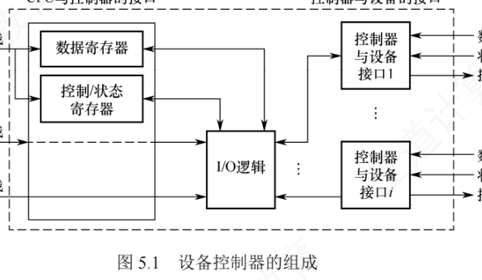
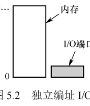
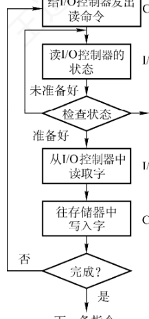
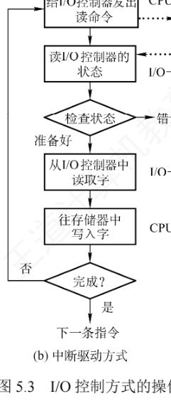
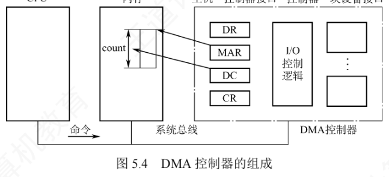
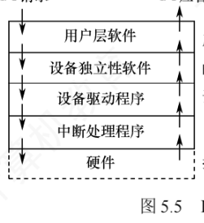
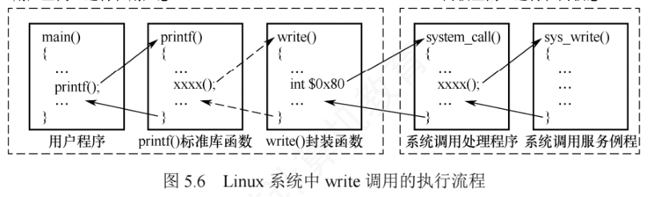

5.1 I/O管理概述
从本章开始进入输入/输出（I/O）管理。这一章内容比较分散，与硬件结合紧密，但历年统考命题通常较为直接，只要认真复习便能稳拿分。学习本节前，请先带着一个问题：I/O 管理需要完成哪些核心功能？学完后回到本节小结，检验自己能否独立作答。
5.1.1 I/O设备
I/O 设备管理是操作系统中最复杂、种类最繁多的部分，其核心思路是通过软硬件协作，屏蔽不同设备的物理差异，让应用程序能以统一的方式使用各类设备。一个 I/O 设备通常由两部分构成：
- 设备本身：执行具体输入/输出操作的物理装置，如磁盘的盘片与磁头；
- 设备控制器：连接在系统总线上的专用电路（如接口芯片），负责把操作系统发出的抽象命令（如「读取第 x 个扇区」）翻译成设备能识别的电信号，并协调主机与设备之间的数据传输。
有了设备控制器这层「翻译」，操作系统无须了解每种设备的具体细节，就能统一管理它们。
1. 设备的分类
I/O 设备指能向计算机输入数据或接收其输出数据的外部设备，可从四个角度分类：
| 分类角度 | 类别 | 特点与典型设备 |
|---|---|---|
| 按信息交换单位 | 块设备 | 以固定大小的数据块为单位交换信息；传输速率较高，可寻址、支持随机访问（可对任意数据块读/写）。典型：磁盘 |
| 字符设备 | 以字符（字节）为单位交换信息；传输速率较低，不可寻址，常采用中断方式实现异步通信。典型：交互式终端、打印机 | |
| 按传输速率 | 低速设备 | 每秒几字节至数百字节，如键盘、鼠标 |
| 中速设备 | 每秒数千字节至数十千字节，如激光打印机 | |
| 高速设备 | 每秒数百千字节至数百兆字节甚至更高，如磁盘 | |
| 按使用特性 | 人机交互设备 | 用于用户与计算机之间的信息交互，如键盘、显示器、打印机 |
| 存储设备 | 用于持久化存储数据，如磁盘、磁带、光盘 | |
| 网络通信设备 | 用于计算机间通信，如网卡、调制解调器 | |
| 按共享属性 | 独占设备 | 任一时刻仅允许一个进程使用；分配给某进程后即由其独占，直至用完释放。多为低速设备，典型：打印机 |
| 共享设备 | 在一段时间内允许多个进程逻辑上并发访问（物理访问仍需调度协调、分时交替使用）。典型：磁盘 | |
| 虚拟设备 | 用 SPOOLing 技术把一台独占设备改造成多台逻辑设备，供多个进程并发使用；实质是以高速共享设备（磁盘）作缓冲，实现独占设备的逻辑共享 |
2. I/O接口（设备控制器）
I/O 接口（也称设备控制器）是 CPU 与设备之间的「桥梁」，负责接收 CPU 的命令、控制设备工作，把 CPU 从烦琐的设备控制事务中解脱出来。它主要由三部分组成（图 5.1）：

- 设备控制器与 CPU 的接口：实现 CPU 与控制器之间的通信，包含三类信号线——数据线传输读/写数据及控制、状态信息；地址线指定 I/O 接口中寄存器的编号；控制线传送读/写等控制信号。
- 设备控制器与设备的接口：一个控制器可连一台或多台设备，因此内部可有一个或多个设备接口，每个接口都传输数据、控制、状态三类信号。
- I/O 逻辑：实现对设备的控制。它经控制线与 CPU 交互，对接收的 I/O 命令译码，并依据目标地址识别相应设备。CPU 启动设备时，向控制器发送启动命令和目标地址，由 I/O 逻辑解析后控制指定的设备。
设备控制器的主要功能：①接收并识别命令（如磁盘控制器响应读、写、寻道命令）；②完成数据交换（CPU 与控制器之间、控制器与设备之间）；③标识并报告设备状态，供 CPU 查询；④地址识别；⑤数据缓冲；⑥差错控制。
以磁盘控制器为例：收到「读取第 11408 个扇区」的命令后，它会自动把线性扇区号换算成柱面号、盘面号和扇区号，控制磁头定位、等待旋转延迟、读出数据，最终把数据可靠地送入内存。操作系统只需发出命令，无须关心底层硬件的实现细节——这正是控制器存在的意义。
3. I/O接口的类型
- 按数据传送方式（设备与接口一侧）：并行接口（一个字节或字的所有位同时传送）与串行接口（一位一位有序传送），接口需完成相应的并/串或串/并格式转换；
- 按主机访问设备的控制方式：程序查询接口、中断接口、DMA 接口等；
- 按功能灵活性：可编程接口（可通过编程改变功能）与不可编程接口；
- 按设备类型：字符设备接口、块设备接口、网络设备接口（与 5.1.4 节的应用程序 I/O 接口分类呼应）。
4. I/O端口
I/O 端口指设备控制器中可被 CPU 访问的寄存器，主要有三类：
- 数据寄存器：缓存设备送来的输入数据，或暂存 CPU 发出的输出数据；
- 状态寄存器：保存设备的状态或执行结果，供 CPU 读取；
- 控制寄存器：由 CPU 写入，用于启动操作或设置设备的工作模式。
为了让 CPU 能访问这些端口，必须对端口编址，每个端口对应一个唯一的端口地址。常见编址方式有两种（图 5.2）：

| 编址方式 | 实现要点 | 优点 | 缺点 |
|---|---|---|---|
| 独立编址 （I/O 映射方式） |
为 I/O 端口建立独立于主存的地址空间；端口地址与内存地址可相同但分属不同空间，互不冲突。CPU 用专用 I/O 指令（如 x86 的 IN / OUT）访问，地址字段指定端口号 | 端口数远少于内存单元，所需地址线少、译码电路简单、寻址快；专用指令使 I/O 操作在程序中清晰可辨，便于阅读调试 | I/O 指令功能有限（一般只能做简单传输），编程灵活性差；CPU 需提供存储器读/写和 I/O 读/写两组控制信号，控制逻辑更复杂 |
| 统一编址 （内存映射方式） |
把部分主存地址空间划给 I/O 端口，端口与内存单元共享同一地址空间，靠地址范围区分访问目标。无须专用指令，用普通访存指令（加载/存储）即可访问 | 无须专用 I/O 指令，编程灵活；端口可获得较大的编址空间；I/O 访问的保护可由虚拟存储管理机制统一实现，无须额外硬件 | 端口占用主存地址空间，减少了可用内存容量；需根据完整地址判断是否为 I/O 区域，译码电路较复杂、译码速度较低 |
5.1.2 I/O控制方式
I/O 控制指控制设备与主机之间的数据传送。I/O 控制方式的发展始终贯穿一条主线：尽量减少 CPU 对 I/O 过程的干预，把 CPU 从繁杂的 I/O 控制事务中解放出来，让它去做更多运算任务。共有 4 种控制方式，一种比一种「解放」得更彻底。

1. 程序直接控制方式（轮询方式）
CPU 对设备的控制采用轮询方式。如图 5.3(a)：CPU 向控制器发出读命令后，不断地循环测试设备状态，直到确认该字（节）已进入控制器的数据寄存器，才把数据取走送入内存，完成一个字（节）的 I/O。
- 优点：简单、易于实现。
- 缺点：CPU 的绝大部分时间耗在等待设备状态的循环测试上，CPU 与 I/O 设备只能串行工作；由于两者速度差距悬殊，CPU 利用率相当低。根因在于 CPU 侧没有中断机制，设备无法主动「报告」自己已完成输入。
2. 中断驱动方式

中断驱动方式的思想是：允许 I/O 设备主动打断 CPU 的运行来请求服务，从而「解放」CPU——发出 I/O 指令后 CPU 可以继续做其他有用的工作。从两个视角看它的工作过程：
- 从设备控制器角度看：控制器接收读命令后从设备读数据；数据一旦进入数据寄存器，便通过控制线向 CPU 发中断信号，表示数据已就绪，随后等待 CPU 来取；收到取数请求后把数据放上数据总线，传到 CPU 的寄存器中，本次 I/O 结束，控制器又可开始下一次操作。
- 从 CPU 角度看：发出读命令后，请求 I/O 的进程被阻塞，保存上下文并转去执行其他进程；CPU 在每个指令周期末尾检查中断信号，发现有控制器发来的中断时，保存当前进程上下文，转去执行中断处理程序——从控制器的数据寄存器读出一个字（节），写入内核缓冲区；处理完后解除原请求进程的阻塞状态，恢复其上下文继续执行。
优点：设备完成后主动「上报」，不再轮询；设备准备数据期间 CPU 与设备并行工作，CPU 利用率明显提升。仍存在的两个问题：①设备与内存之间的数据交换必须经过 CPU 中的寄存器；②CPU 以字（节）为单位干预，若用于块设备 I/O 则极其低效。因此中断驱动方式的速度仍然受限。
3. DMA方式
DMA（Direct Memory Access，直接存储器存取）方式的核心思想是在 I/O 设备与内存之间建立直接数据通路，彻底「解放」CPU。与中断驱动相比有三个特点：
- 基本传送单位是数据块，不再是字（节）；
- 数据直接在设备与内存之间传输，不再经过 CPU；
- 仅在一块数据的开始和结束时需要 CPU 干预。

为实现设备与内存间成块数据的直接交换，DMA 控制器包含四类寄存器：
| 寄存器 | 作用 |
|---|---|
| 命令/状态寄存器（CR） | 暂存 CPU 发来的 I/O 命令或设备状态 |
| 内存地址寄存器（MAR） | 存放数据在内存中的起始地址：输入（设备→内存）时是写入内存的目标地址；输出（内存→设备）时是读取内存的源地址 |
| 数据寄存器（DR） | 暂存单次传输的数据单元（如一个字） |
| 数据计数器（DC） | 记录本次需传送的字（节）总数 |
工作过程（对应图 5.3(c) 的思想）：CPU 收到设备的 DMA 请求后，向 DMA 控制器发启动命令并设置 MAR、DC 初值（预处理），随后把 I/O 控制权交给 DMA 控制器，自己转去做其他任务；DMA 控制器接管总线后，以突发方式将整块数据在设备与内存间直接传输，无须 CPU 干预；传输结束后，DMA 控制器向 CPU 发中断报告完成（后处理）。可见 CPU 只在传送的开始和结束阶段介入。
优点：数据以「块」为单位传输，CPU 干预频率比中断方式进一步降低；数据不再经过 CPU 寄存器，CPU 与设备的并行程度进一步提升。
4. 通道控制方式课外拓展
I/O 通道是一种能执行存放在主存中的通道程序（由一系列专用通道指令组成）的专用处理机。设置通道后，CPU 只需向通道发出一条 I/O 指令，指明目标设备及通道程序在内存中的起始地址；通道收到指令后自主执行通道程序，完成整组 I/O 操作，结束后才向 CPU 发中断请求。这样 CPU、通道与 I/O 设备可以高度并行工作。
- 通道与通用处理机的区别：通道的指令集专用于 I/O 控制，功能单一；通道没有独立的主存储器，通道程序和数据都放在主机内存中，且所有访存操作受 CPU 控制。
- 通道与 DMA 方式的区别：DMA 需由 CPU 预设数据块大小、内存始址等参数；通道通过执行程序动态确定参数，能自主完成涉及多台设备、多个阶段的复杂 I/O 任务。此外，每个 DMA 控制器通常只服务一台设备，而一个通道可同时管理多台设备与内存之间的数据交换。
5. 四种I/O控制方式对比（重点）
| 对比项 | 程序直接控制（轮询） | 中断驱动 | DMA | 通道 |
|---|---|---|---|---|
| CPU 干预频率 | 全程干预：发命令后不断循环测试状态，就绪后由 CPU 取数 | 每个字（节）就绪即中断一次，CPU 执行中断处理程序搬一个字（节） | 每块数据的开始（预处理）和结束（后处理）各干预一次 | 仅发出一条启动指令；整组 I/O 完成或出错时中断一次 |
| 数据传送单位 | 字（节） | 字（节） | 数据块 | 一批数据块（整组 I/O 任务） |
| 数据流向 | 设备→控制器→CPU 寄存器→内存（必经 CPU） | 设备→控制器→CPU 寄存器→内存（必经 CPU） | 设备↔内存直接传送，不经 CPU | 设备↔内存直接传送，由通道控制、可多台设备并行 |
| 并行程度 | CPU 与设备完全串行 | 设备准备数据期间 CPU 可运行其他进程 | CPU 与数据传送基本并行 | CPU、通道、设备可高度并行 |
| 优点 | 简单、易实现 | 用中断「解放」CPU，利用率明显提升 | 按块干预、数据不经过 CPU 寄存器 | CPU 解脱最彻底，资源利用率最高 |
| 缺点 | CPU 长时间空转等待，利用率极低 | 每字（节）中断一次、数据仍经 CPU，块设备场景低效 | 预处理仍需 CPU；一台 DMA 控制器通常只服务一台设备 | 需专用硬件（通道），成本高、机制复杂 |
| 典型应用 | 简单低速场合 | 键盘等字符设备 | 磁盘等块设备 | 大型系统的大批量 I/O |
5.1.3 I/O软件层次结构
I/O 软件向下与硬件紧密相关，向上与虚拟存储器、文件系统及用户直接交互。为使复杂的 I/O 软件结构清晰、可移植性好，现代操作系统普遍采用层次化设计：每层利用下层提供的服务完成特定子任务，并屏蔽实现细节、向上层提供统一接口；只要层间接口不变，任一层的修改都不影响其他层次。一种合理的四层划分如图 5.5。

1. 用户层软件
实现与用户的交互接口。用户可直接调用用户层提供的 I/O 库函数（如与 I/O 相关的标准库函数）操作设备。大部分 I/O 软件位于操作系统内核，但有一小部分驻留在用户层（例如与用户程序链接的库函数）。用户层 I/O 软件必须通过系统调用才能获得操作系统服务。
2. 设备独立性软件
设备独立性（设备无关性）指应用程序使用 I/O 设备时无须依赖具体的物理设备：应用程序用逻辑设备名请求某类设备，系统在运行时把逻辑设备名映射为实际的物理设备名。使用逻辑设备名的好处：①提高设备分配的灵活性；②易于实现 I/O 重定向——更换 I/O 使用的设备而不必修改应用程序。
该层位于设备驱动程序之上，主要功能两方面：①执行所有设备的公共操作：设备分配与回收、逻辑设备名到物理设备名的映射、设备保护（禁止用户直接访问硬件）、缓冲管理、差错控制，以及提供统一大小的逻辑块（屏蔽设备在交换单位、传输速率上的差异）；②向用户层（或文件系统）提供统一接口：无论底层设备类型如何，应用都可用统一的系统调用（如 read/write）访问，显著增强可移植性与可维护性。
3. 设备驱动程序
驱动程序与硬件直接相关，每类设备需配置一个专用的驱动程序（按设备类型配置，同类多台设备可共用一个）。它是 I/O 子系统与设备控制器之间的通信桥梁：接收上层的抽象 I/O 请求（如 read/write），转换成控制器能识别的具体指令并启动设备，再把控制器返回的状态或数据传回上层。其典型工作流程如下：
- 将抽象请求转换为具体操作：上层请求是逻辑性的（如「读取逻辑块 5」），驱动程序按设备特性把逻辑地址转换为物理参数，例如磁盘驱动程序把逻辑扇区号换算成柱面号、盘面号、扇区号；
- 校验请求的合法性：如禁止从只写设备（打印机）读数据、禁止向只读方式打开的设备写入，非法则向上层报错；
- 检查设备状态：读取控制器状态寄存器，确认设备就绪（如写操作要求设备「接收就绪」），未就绪则等待；
- 传递参数：向控制器相应寄存器写入命令、数据缓冲区地址、传输长度等参数；
- 启动设备并处理后续：发送启动信号后，在多道程序系统中当前进程随即阻塞，CPU 转去运行其他进程，实现与 I/O 的并行；设备完成后由中断处理程序唤醒该进程。
此外，驱动程序还负责设备初始化、状态维护、错误处理以及与中断处理的配合，通过封装底层硬件细节，让上层用统一接口访问各类设备。
4. 中断处理程序
I/O 操作完成时，设备控制器发出中断信号；CPU 执行完当前指令后响应中断，暂停当前进程、转入中断处理程序，处理完毕再恢复原进程。一次中断处理的完整过程：
- 检测并响应中断：设备完成一个数据单位（字符或数据块）的传输后，控制器发出中断请求；CPU 在指令周期末检测到信号，暂停当前进程；
- 保护被中断进程的 CPU 现场：硬件自动把 PC、PSW 压入中断栈，操作系统软件再把其他寄存器内容也保存到该栈；
- 转入相应设备的中断处理程序：识别中断源，跳转到对应设备的处理程序；
- 处理中断：读取控制器状态寄存器判断操作是否正常完成；成功则把设备数据寄存器的内容送入内存缓冲区，异常则进行错误处理；
- 恢复现场并返回：从中断栈恢复各寄存器，CPU 从被中断指令的下一条继续执行原进程。
操作系统还需对中断处理程序本身进行管理，包括三个环节：
- 注册中断：驱动程序初始化时向内核注册中断号及处理函数入口地址，建立硬件中断信号与服务代码的映射；
- 处理中断：典型流程为确认中断是否由本设备产生→清除控制器中断标志（防止重复触发）→执行必要的硬件操作（读/写数据）。中断处理程序运行在中断上下文中，必须快速、非阻塞，不得调用可能引起进程睡眠或调度的函数；
- 注销中断：驱动卸载或设备停用时注销处理程序以释放资源；独占的中断请求线随即被禁用，共享的中断线则要等所有关联设备都注销后才最终禁用。
5. I/O操作举例
层次结构不能死记硬背，用一次 write 请求串起各层功能：①用户通过 write 命令接口发起请求，首先进入用户层软件；②操作系统向上提供统一通用接口，write 请求由设备独立性层解析后下传；③不同设备对 write 的处理方式不同（磁盘与打印机行为差异显著），由设备驱动层把通用 write 命令转换为设备特定指令；④驱动程序把指令发给设备控制器、启动实际写操作，完成后控制器向 CPU 发中断，由中断处理程序响应；⑤中断处理程序确认写完成、清除中断标志、唤醒等待进程，并把结果逐层返回用户程序。

结合 Linux 一次 write 系统调用的实际执行流程（图 5.6）：用户程序调用 printf() 后，经标准库封装最终触发 write() 系统调用的封装函数；该函数生成的指令序列中含一条陷阱指令（如 IA-32 的 int $0x80），执行前先把系统调用号和 I/O 参数（文件描述符、缓冲区地址、字节数）写入指定寄存器。陷阱指令产生受控的软中断，硬件自动完成用户态到内核态的切换；CPU 进入内核后跳到统一入口 system_call()，按寄存器 eax 中的调用号经跳转表分派给服务例程 sys_write()；它先做与设备无关的公共操作（参数合法性检查、内核缓冲区管理），再根据文件描述符定位设备、调用对应驱动程序；驱动程序初始化 I/O 接口、设置参数并启动传输，随后把当前进程置为阻塞态并调用调度程序让出 CPU。传输完成后控制器发中断，中断服务程序读状态、清中断标志、唤醒等待进程；内核沿调用栈逐级返回，在 system_call() 末尾执行 iret 等特权指令切换回用户态。
5.1.4 应用程序I/O接口
应用程序 I/O 接口是操作系统为统一管理各类 I/O 设备而设计的一套软件架构与编程规范，目的有二：一是让应用程序（如打开文件）无须关心底层硬件细节；二是让新设备能以模块化方式方便地接入系统，而无须改动内核代码。
1. 三类设备接口
操作系统把物理设备抽象为三种通用类型，并为每类提供标准接口，设备间的具体差异由相应驱动程序封装：
（1）字符设备接口：数据存取和传输以字符为单位，如键盘、打印机；传输速率较低、不可寻址、只能顺序存取，输入/输出通常采用中断驱动方式。接口要点：①由于不可寻址，系统通常设一个字符缓冲区，用户程序用 get 从缓冲区读字符、用 put 向缓冲区写字符；②字符设备种类繁多、差异大，接口提供通用的 in-control 指令（含多个参数）来指定设备相关的特定功能；③大部分字符设备属于独占设备，接口还需提供打开和关闭操作以实现互斥共享。
（2）块设备接口：数据存取和传输以数据块为单位，典型是磁盘；传输速率较高、可寻址，磁盘 I/O 常采用 DMA 方式。接口把上层的抽象命令（打开、读、写、关闭等）映射为设备能识别的操作；并且隐藏磁盘的物理二维结构（磁道号+扇区号），把所有扇区从 0 到 n−1 依次编号，变成线性地址空间。常用命令有 read()、write() 和 seek()（指定下一个要传输的块）。
（3）网络设备接口：多数操作系统采用套接字（Socket）接口作为网络 I/O 的标准。应用程序通过套接字系统调用创建本地套接字，并与远程应用程序的套接字建立连接，实现数据发送与接收。
| 接口类型 | 典型设备 | 传输单位 | 寻址特性 | 典型 I/O 控制方式 | 主要操作 |
|---|---|---|---|---|---|
| 字符设备接口 | 键盘、打印机 | 字符（字节） | 不可寻址、顺序存取 | 中断驱动 | get / put、in-control、打开 / 关闭 |
| 块设备接口 | 磁盘 | 数据块 | 可寻址、随机访问 | DMA | read / write / seek，线性块地址 |
| 网络设备接口 | 网卡 | — | — | — | Socket 套接字系统调用 |
2. 阻塞I/O与非阻塞I/O
| 模式 | 行为 | 优点 | 缺点 |
|---|---|---|---|
| 阻塞 I/O （多数系统的默认模式） | 进程发起 I/O 请求后，若数据未就绪则立即被阻塞、移入等待队列，期间不能做任何其他事；I/O 完成后内核将其移回就绪队列，重新获得 CPU 时系统调用返回结果 | 实现简单、编程模型直观，适合顺序处理或低并发场景 | 等待期间进程完全阻塞，CPU 资源闲置，系统整体利用率低 |
| 非阻塞 I/O | 发起请求后内核不阻塞进程，系统调用立即返回；数据未就绪则返回表示「暂无数据」的错误状态（如 −1），进程可继续做其他事、稍后重试；某次重试时数据已就绪，内核把数据从内核缓冲区复制到用户空间并返回实际传输字节数 | 等待期间进程可执行其他任务，适合高并发、高响应性应用 | 靠轮询方式频繁检查 I/O 状态，浪费 CPU 资源 |
5.1.5 本节小结
本节开头提出的问题的参考答案如下。
I/O管理需要完成哪些核心功能？
I/O 管理需要完成以下 4 部分内容：
- 状态监控：实时掌握外部设备的工作状态（如忙、就绪、故障等）；
- 数据传输：协调并完成主机与设备之间的数据交换；
- 设备分配：在多用户或多进程环境下，负责设备的分配、共享与回收；
- 设备控制：通过设备驱动程序启动 I/O 操作，并处理设备返回的完成信号或故障中断。
回顾本节主线：先认识 I/O 设备本身（分类、控制器、端口与编址），再看主机如何控制设备（四种 I/O 控制方式，核心是不断减少 CPU 干预），然后自顶向下剖析 I/O 软件的四层结构（用户层软件→设备独立性软件→设备驱动程序→中断处理程序），最后落到应用程序看到的 I/O 接口（字符/块/网络三类接口，阻塞与非阻塞两种模式）。其中I/O 软件层次结构是全章的骨架——下一节的「设备独立性软件」正是其中的第二层，也是统考最爱考查的一层。